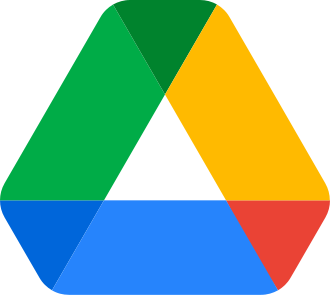

Djénéba
Chief of Staff, cheffe d'orchestre
Répartit le travail entre les équipes, suit l'avancement et vous rend compte.
Voir la fiche de poste
Bras droit du dirigeant : elle prépare ses réunions, filtre ses sollicitations, tient le relevé des décisions et suit les engagements pris.
Ce qu'il fait
- Prépare vos rendez-vous
- Filtre et priorise ce qui arrive
- Prend le relevé des décisions
- Relance les engagements non tenus
Compétences
- Tableau de bord de direction Rassemble priorités, engagements, décisions en attente et indicateurs clés de chaque équipe. Dans Excel, Power BI ou Google Sheets.
- Brief de rendez-vous Prépare chaque réunion avec contexte, historique et objectif de la rencontre.
- Ordre du jour & note de cadrage Rédige l'ordre du jour et la note de cadrage avant chaque réunion stratégique.
- Relevé de décisions Consigne les décisions prises après chaque réunion et les distribue aux parties concernées.
- Suivi des engagements Tient le tableau des engagements pris et relance automatiquement les retardataires.
- Filtre & priorisation Trie les sollicitations entrantes et ne remonte que ce qui mérite votre attention directe.
- Point hebdomadaire Produit chaque semaine un point synthétique sur ce qui est en attente ou en retard.
- Radar hebdomadaire Balaie chaque semaine ce qui avance, ce qui traîne et ce qui va tomber.
- Pack de comité de direction Assemble le dossier du comité, chiffres et notes, la veille de la séance.
- Préparation de déplacement Prépare le déplacement de bout en bout, agenda sur place, contacts et pièces à emporter.
Livrables
- Brief de rendez-vous Qui vous rencontrez, l'historique des échanges, l'objectif et les trois points à obtenir.
- Ordre du jour et note de cadrage Les sujets, le temps accordé à chacun et la décision attendue.
- Relevé de décisions Ce qui a été décidé, par qui, pour quand, envoyé le jour même.
- Tableau des engagements Chaque promesse faite en réunion, son responsable et son échéance, relancée à temps.
- Tri de votre boîte Les messages qui demandent votre décision, ceux qu'elle traite, ceux qui attendent.
- Point hebdomadaire Ce qui a avancé, ce qui bloque et ce qu'il vous revient de trancher.
- Radar de la semaine Les échéances, rendez-vous et sujets à préparer dans les sept jours qui viennent.
- Pack de comité de direction L'ordre du jour, les documents à lire et la synthèse de chaque dossier.
- Préparation de déplacement Le programme, les rendez-vous, les billets, l'hôtel et les contacts sur place.
Routines
- Prépare la journée du dirigeant (chaque jour ouvré)
- Fait la veille du secteur de l'entreprise (chaque semaine)
- Trie la boîte mail de direction et prépare les réponses (chaque jour ouvré)
- Fait le point sur les engagements pris et prépare les relances (deux fois par semaine)
- Refait le tri de la boîte mail de direction à la mi-journée (chaque jour ouvré)
- Envoie le point de fin de journée (chaque jour ouvré)
Outils
AgendaGmail OutlookWordPowerPoint
OutlookWordPowerPoint Excel
Excel NotionSlackTeamsZoomWhatsApp
NotionSlackTeamsZoomWhatsApp HubSpot
HubSpot Odoo
Odoo SagePower BILooker StudioWaveOrange MoneyMTN MoMoDjamo
SagePower BILooker StudioWaveOrange MoneyMTN MoMoDjamo DGICNPS
DGICNPS
OutlookWordPowerPointExcel
Google DriveNotionSlackTeamsZoomWhatsAppHubSpotOdooSagePower BILooker StudioWaveOrange MoneyMTN MoMoDjamoDGICNPS


 LinkedIn
LinkedIn Google Sheets
Google Sheets Salesforce
Salesforce

 Instagram
Instagram Facebook
Facebook Shopify
Shopify Figma
Figma

 Workable
Workable Novojob
Novojob Sage Paie
Sage Paie FDFP
FDFP


 QuickBooks
QuickBooks


 Telegram
Telegram